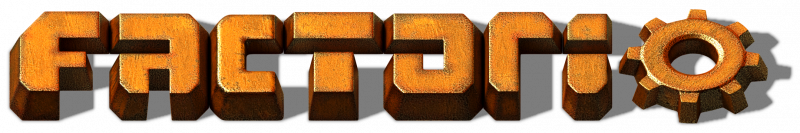
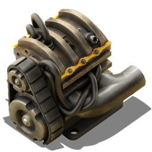
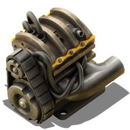

Factorio é um jogo eletrônico de construção e gestão. O jogo começou a ser desenvolvido em 2012 pela empresa Wube Software, sediada em Praga. O jogo foi lançado em modelo de acesso antecipado em 2016, e seu lançamento completo aconteceu em 14 de agosto de 2020.
 

X